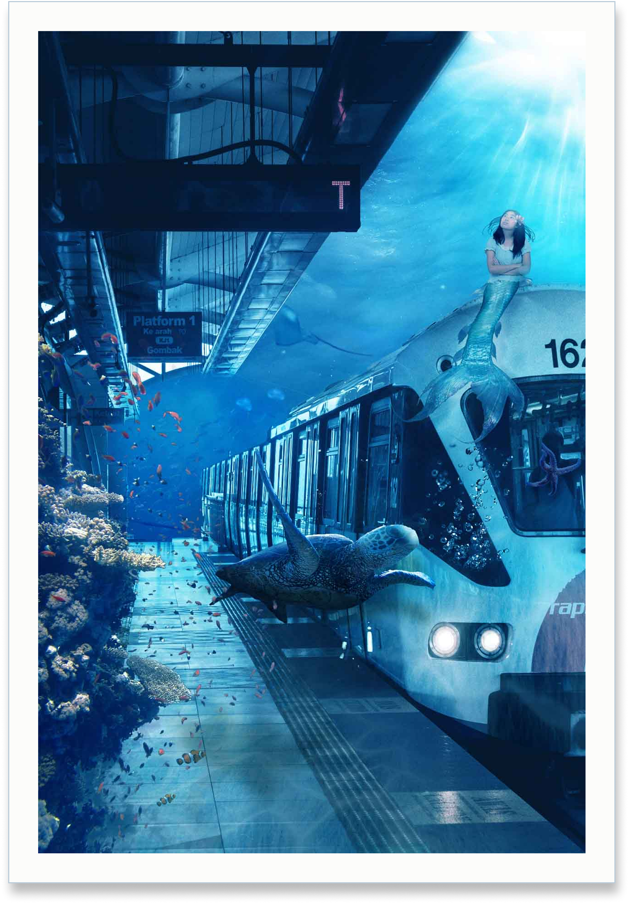
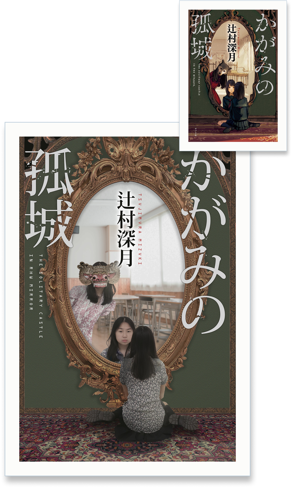

Digital Compositing


About the project
These two digital compositing projects showcase the digital
compositing of real-world photography with imaginative
storytelling through advanced masking, lighting integration, and
color grading.
Work 01 (Underwater World) transforms a
mundane train station into a surreal underwater fantasy, using
cyan color grading, light rays, and marine elements, including
coral reefs, a sea turtle, and a imagined version of myself as a
mermaid to create realistic underwater depth.
Meanwhile,
Work 02 (Live Action Poster) reimagines the illustrated cover of
Mizuki Tsujimura’s Lonely Castle in the Mirror (Kagami no Kojō) as
a live-action poster with me as the main character, while
integrating Indonesian cultural elements. Employing precise
perspective matching, shadow integration, and reflection
compositing, the piece adapts the original visuals by dressing the
main character in traditional Batik and replacing the wolf mask
with a Barong mask inside the mirror reflection.